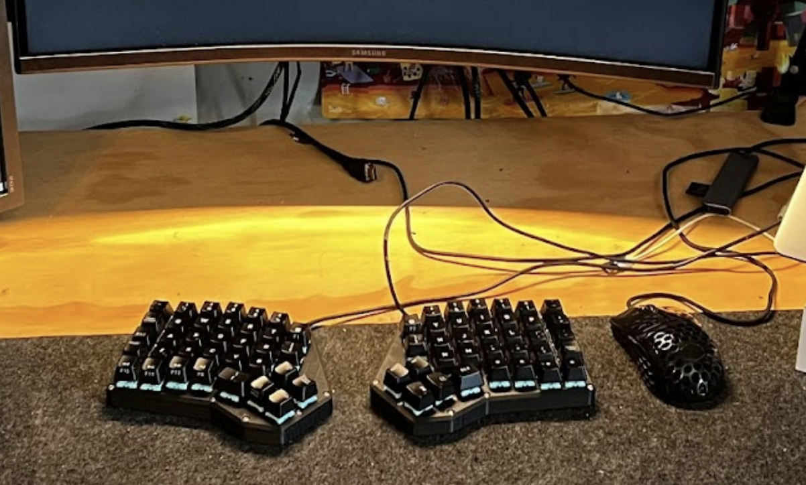

Matthew Allen | Portfolio
Here's a collection of some of my projects, and a bit about me!
Projects
Polaris - Actively Stabilized Launchpad
Lead Software Engineer at Purdue Orbital. Developing Polaris, a cold-gas thruster system designed to actively stabilize rocket launchpads before launch. Developed guidance, navigation, and control software integrating electrical components, including an RP2040 microcontroller interfacing with sensors and solenoids. Worked on PID control algorithms to counteract air disturbances, tuning through ground tests. Currently engineering a flight-weight system.

ChessMate - Robotic Chessboard
Designing a robotic chessboard capable of online gameplay against humans and a locally ran chess engine. Integrated mechanical design with custom 3D-printed indexed chess pieces and a mechanical gripper. Developed software in Python to generate G-Code, scrape online chess platforms, and interface with Arduino for piece manipulation. Future goals include full online integration, computer vision for piece tracking, and a custom robotic arm gantry system.
Custom Mechanical Keyboard
Built a fully custom, split ortholinear mechanical keyboard featuring 3D-printed cases, hand-soldered switch matrices, and custom firmware based on Arduino Nano and QMK.

Drum Riser
Built a custom drum riser to dampen sound, limit vibrations, and provide a stable platform for my e-kit. Constructed from plywood and tennis balls. Entire project cost less than $50.
Hobbies
- Snowboarding and motorcycle riding
- Music: Drums, guitar, recording, and mixing
- Fabrication and woodworking
- Robotics and things that move
- 3D printing and CAD
About
I'm a junior studying Mechatronics Engineering Technology at Purdue University. I have experience in software development, embedded systems, electrical engineering, and mechanical design. I'm passionate about aerospace, robotics, and creating things that interest me. Feel free to reach out if you'd like to connect!
Contact
Email: matthewallen442@gmail.com
LinkedIn: https://linkedin.com/in/mattallenn